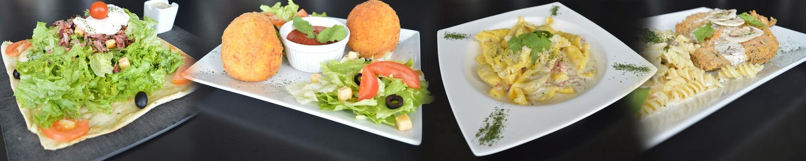

Forbach
Sur place · Livraison40 rue Nationale, 57600 Forbach
11h30 – 14h00 & 17h30 – 22h00 · fermé le dimanche midi

Un vaste choix de pizzas, flamms, spécialités italiennes, pâtes et raviolis frais faits maison, avec un large choix de sauces et de fromages pour les accompagner.
Chaque restaurant a sa propre carte en ligne. Créez votre espace client, composez vos plats et choisissez votre créneau de livraison ou de retrait.
40 rue Nationale, 57600 Forbach
11h30 – 14h00 & 17h30 – 22h00 · fermé le dimanche midi
34 rue Nationale, 57800 Betting
11h30 – 14h00 & 17h30 – 22h00 · fermé samedi midi et dimanche midi
Secteur Saint-Avold
11h30 – 14h00 & 17h30 – 22h00 · fermé samedi midi et dimanche midi
Inscrivez-vous une fois avec votre adresse : vos prochaines commandes n'en seront que plus rapides.
Ingrédients, sauces et fromages pour vos pâtes et vos pizzas : tout se choisit en ligne.
Un planning en ligne vous permet de choisir l'horaire auquel vous souhaitez être livré ou passer retirer votre commande.
Pour chaque événement, O'Cadre vous propose ses solutions. Faites-nous part de vos envies, nous mettons tout en œuvre pour vous satisfaire.